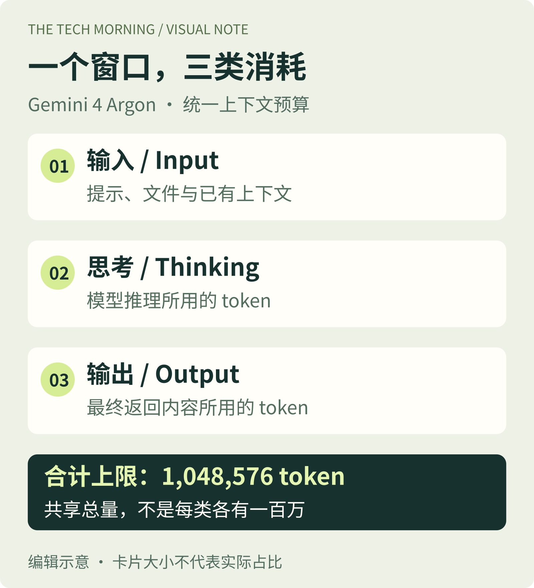

百万级窗口，是输入、思考和输出的共同预算。

Google 10月13日扩大 Gemini 4 Argon 的公开可用范围，开发者可在 Gemini API 付费层接入。它并非当日首次亮相：9月30日首发阶段主要面向受信任的网络防御伙伴。本期聚焦 API，不把不同消费产品的订阅权限混为一谈。
官方文档规定，输入、思考与输出共享1,048,576 token窗口。若要生成超过64K的长响应，需要设置更高的 max_output_tokens 并使用后台执行或分段续接；只打开后台执行、没有提高输出上限，仍会停在64K。完成后还要拼接各段 model_output。
迁移另有两个易漏点：显式上下文缓存暂不支持，temperature、top_p、top_k会被忽略。Google将其定位于复杂编码和多步骤Agent；这是厂商能力描述，本刊没有独立性能实测。